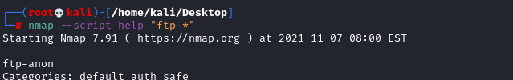

Autorecon NSE scripts
Search for scripts inside nmap
nmap --script-help "[SERVICE]-*"
• ftp:
21
nmap --script="banner,(ftp* or ssl*) and not (brute or broadcast or dos or external or fuzzer)" -p22 <address>
• ssh:22
nmap --script="banner,ssh2-enum-algos,ssh-hostkey,ssh-auth-methods" -p22 <address>
• dns: 53
nmap --script="banner,(dns* or ssl*) and not (brute or broadcast or dos or external or fuzzer)" -p53 <address>
• http: 80
nmap --script="banner,(http* or ssl*) and not (brute or broadcast or dos or external or http-slowloris* or fuzzer)" -p80 <address>
• smb: 137,139,445
nmap --script="banner,(nbstat or smb* or ssl*) and not (brute or broadcast or dos or external or fuzzer)" -p 137,139,445 <address>
to test all the vulnerabilities:
nmap -script=smb-vuln* -p 137,139,445 <address>
Scripts for open portsautorecon for every ports make a scan with nmap NSE
scripts.
We can found what are these scripts here:
https://github.com/Tib3rius/AutoRecon/tree/92492733892453953fbb6d0b0c4d6f82b9fc37d2/autorecon/default-plugins